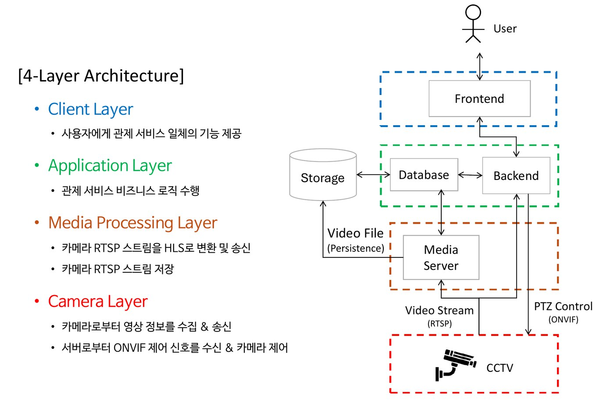

드론 버티포트 CCTV 통합 감시 시스템
「드론 버티포트 환경을 위한 웹 기반 CCTV 통합 감시 시스템 설계 및 구현」 · 2026 한국정보기술학회 하계종합학술대회 대학생논문경진대회 동상
요약
드론 버티포트용 웹 기반 CCTV 통합 관제 시스템 설계·구현. RTSP 영상 수집, 웹 스트리밍, ONVIF PTZ 원격 제어, 24시간 녹화 포함.
배경
드론 물류·도심항공교통(UAM) 실증 확대로 버티포트 안전관리·보안 통제 요구 증가. 도심형 버티포트에 맞춘 CCTV 감시 기준과 설계 사례는 부족.
문제
수동 모니터링 중심 운영이라 인적 오류 가능성이 크고 위험 상황에 즉각 대응하기 어려움. 브라우저는 RTSP를 직접 재생하지 못해 프로토콜 변환 필요.
그림

방법
- IP 카메라가 H.264 영상을 RTSP로 미디어 서버(MediaMTX)에 전송
- 재인코딩 없이 트랜스먹싱해 실시간 시청은 WebRTC, 녹화 재생은 HLS로 출력
- FFmpeg로 1시간 단위 MP4 분할 저장, 타임라인 탐색 지원
- ONVIF Profile S 기반 PTZ 원격 제어, 프리셋 위치 저장
- 기상청 API 연동 기상 대시보드(풍속·시정·강수량)와 전파 환경 표시
- JWT 인증, TLS, WebRTC SRTP. Docker Compose 기반 온프레미스 배포
결과
- IP 카메라 3대(고정형·PTZ) 기반 프로토타입 구현, 실시간 지연 목표 0.5초 이하
- 카메라 수에 따라 바뀌는 반응형 다중 화면, 확대 화면 PTZ 제어
- 과거 영상 조회, 저장 공간 부족 시 오래된 영상부터 자동 삭제
- 이벤트·접근·설정 변경 로그, 사람 진입 자동 감지와 시각·이미지 저장
- 대학생논문경진대회 동상(2026.06.06), 경북대 소프트웨어교육원 산학협력프로젝트 경진대회 인기상
기여
- 기획과 논문 작성
- 프론트엔드: 관제 UI 레이아웃, 실시간 영상 뷰어, PTZ 제어 UI, 녹화 영상 검색·재생, 날씨·전파 대시보드
기술 스택
참고
연구 지원: 과학기술정보통신부·정보통신기획평가원 SW중심대학사업(2021-0-01082). 관련 SW 저작권 등록 C-2026-030871(저작자 경북대학교 산학협력단).